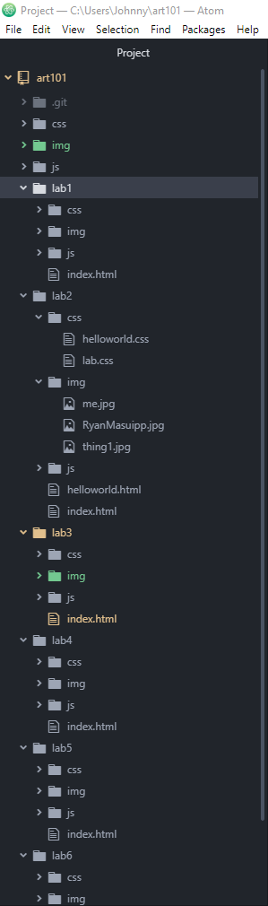
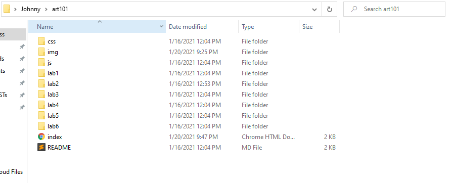
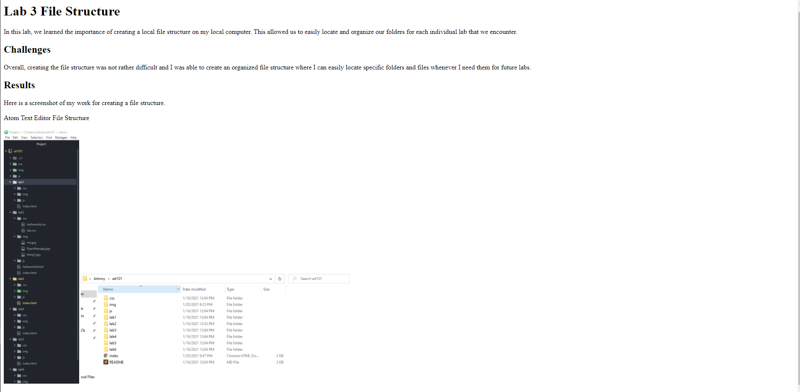
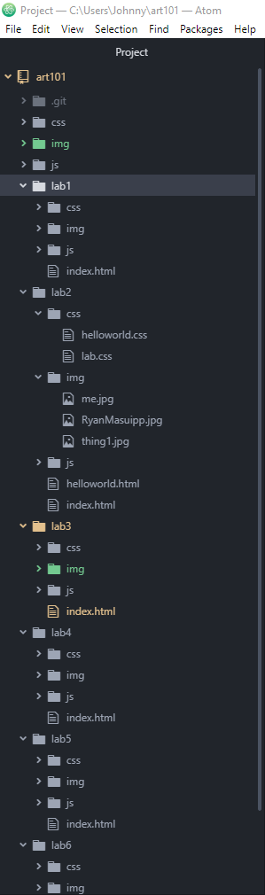
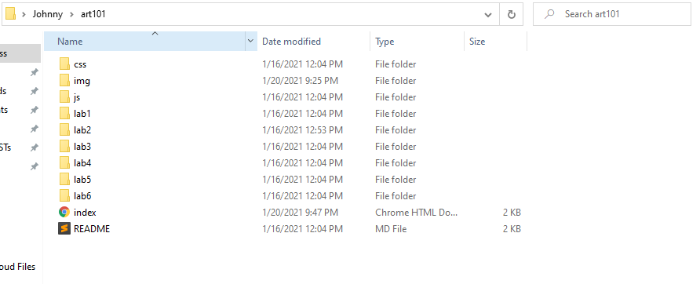
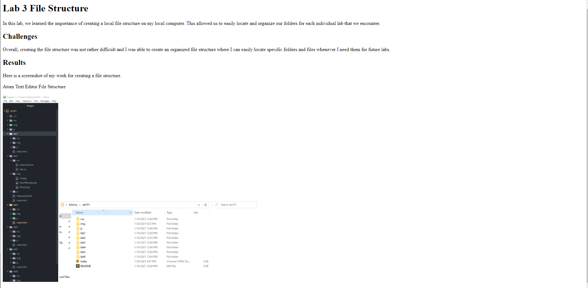

1st Photo: Atom Text Editor File Structure, 2nd Photo: Desktop File Structure, 3rd Photo Desktop Browser View, Bottom Photo, Lab3 index.html code
  

In this lab, we learned the importance of creating a local file structure on my local computer. This allowed us to easily locate and organize our folders for each individual lab that we encounter.
Overall, creating the file structure was not rather difficult and I was able to create an organized file structure where I can easily locate specific folders and files whenever I need them for future labs.
Here is a screenshot of my work for creating a file structure.
1st Photo: Atom Text Editor File Structure, 2nd Photo: Desktop File Structure, 3rd Photo Desktop Browser View, Bottom Photo, Lab3 index.html code


